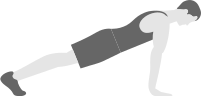

12 exercises deploying only body weight, a chair and a wall, it fulfills the latest mandates for high-intensity effort — all of it based on science.
1. Lateral lunge to overhead tricep extension
2. Wall sit
3. Push up

4. Abdominal crunch
5. Step-up onto chair
6. Squat
7. Triceps dip on chair
8. Plank with arm lift
9. Reverse lunge, elbow to instep with rotation, alternating sides
10. Lunge
11. Lateral pillar bridge — left
12. Lateral pillar bridge — right